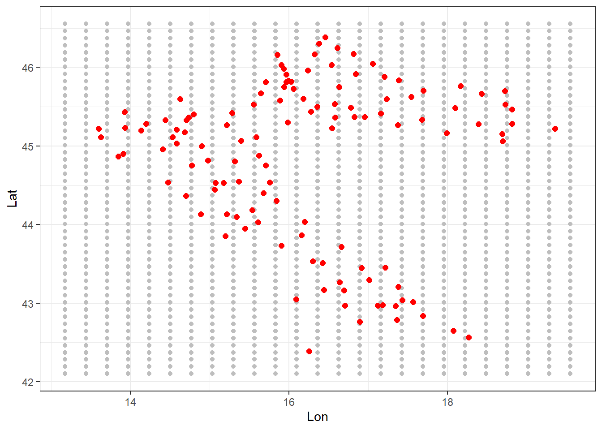
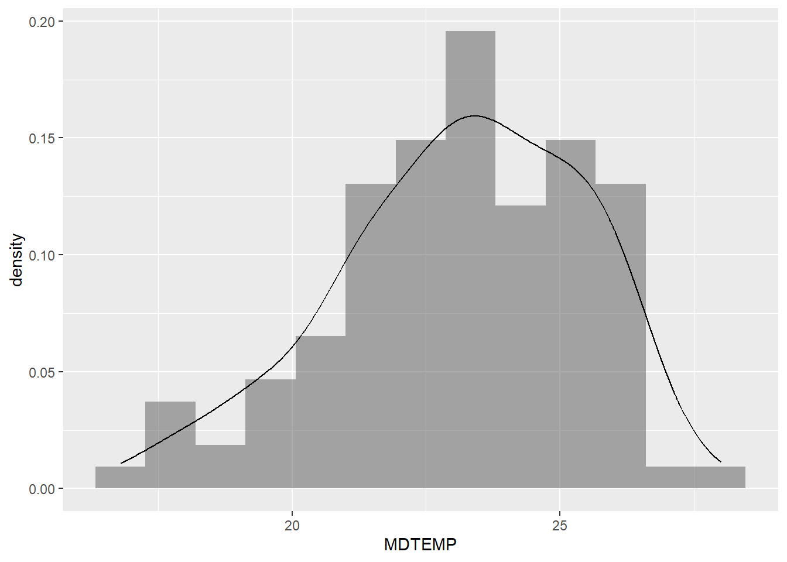
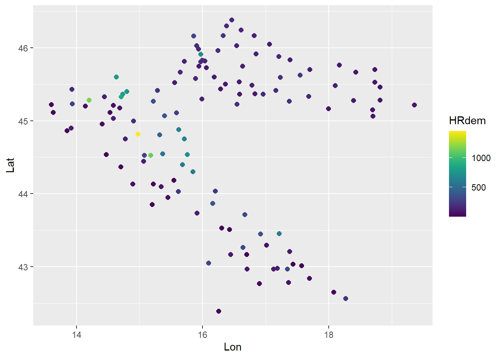
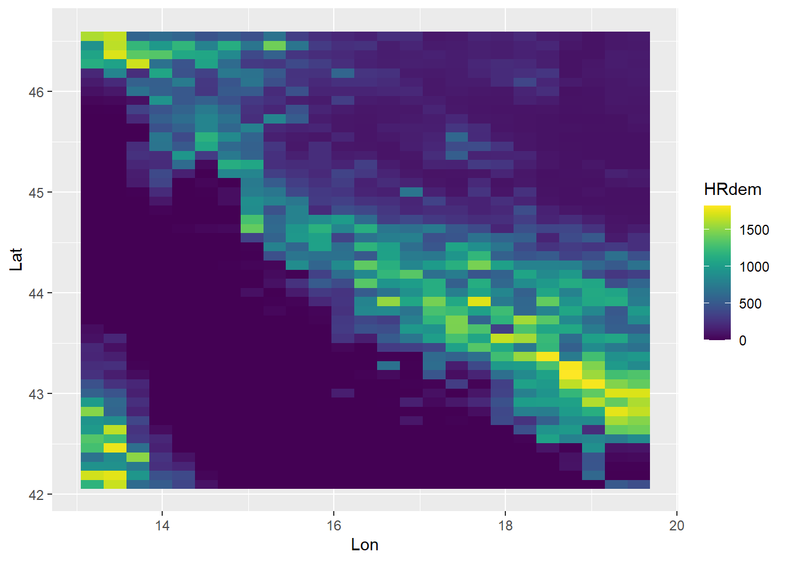
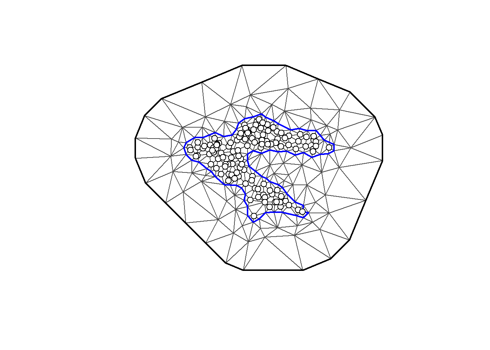
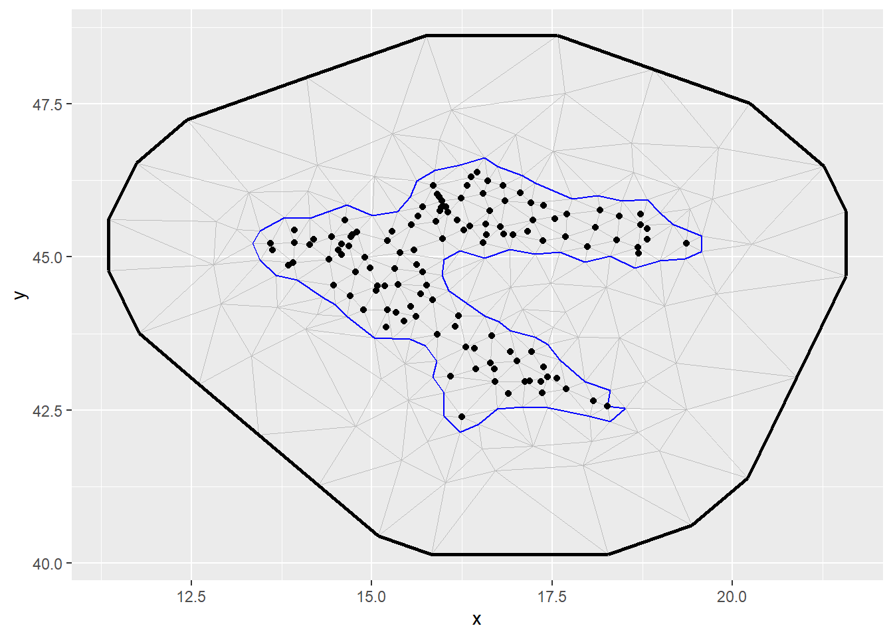
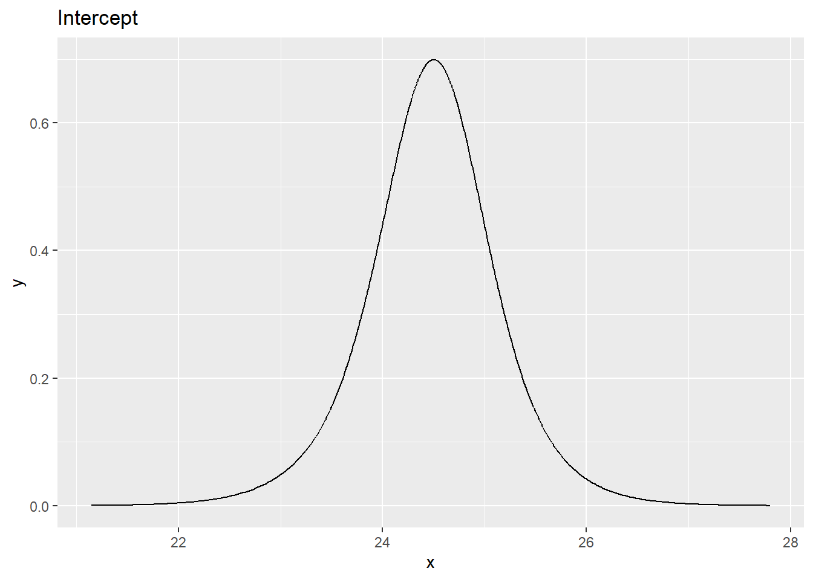
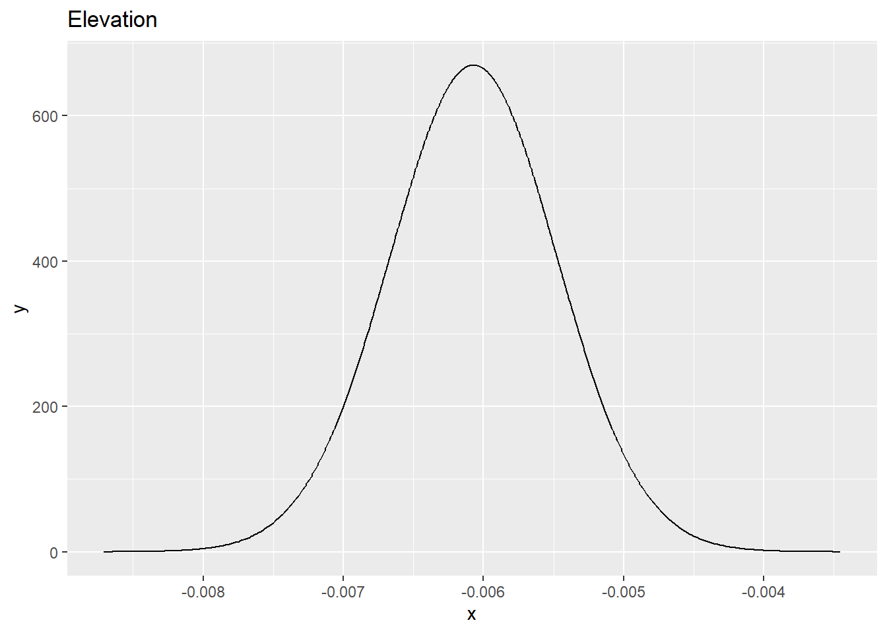
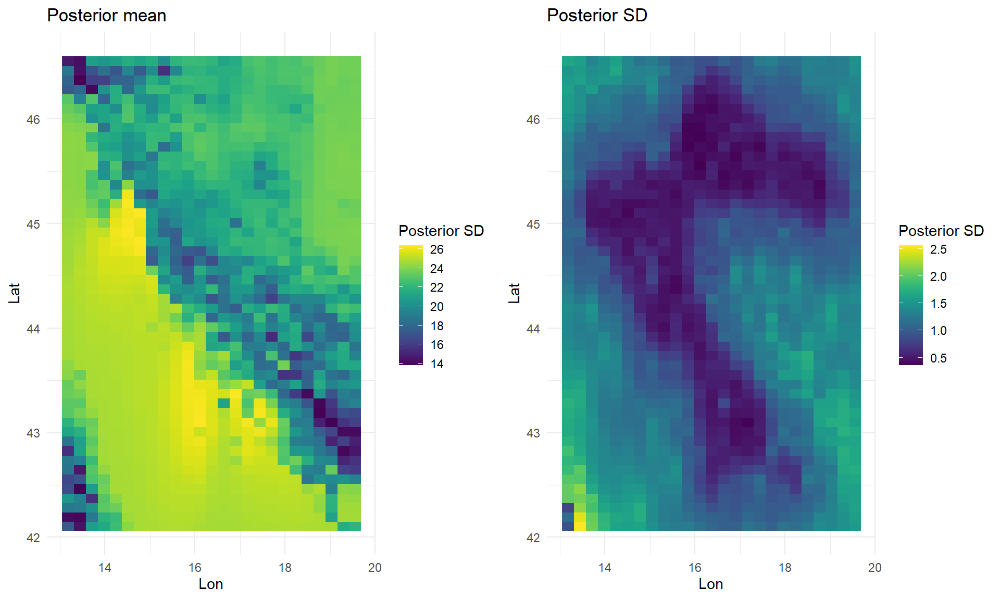

library(tidyverse)
library(INLA)
library(fmesher)
library(inlabru)
library(viridis)
library(cowplot)
# The 'splancs' package also needs to be installed,
# but doesn't need to be loadedPractical 4 - Spatial prediction of temperature in Croatia
1. Introduction
In this practical we use of INLA-SPDE for implementing a spatial model and performing spatial prediction. We will use a dataset related to daily temperature measurements automatically collected at 123 meteorological stations in Croatia on 19th July 2006. Moreover, information about elevation in mt ( HRdem) and distance in km from the coastline (HRdsea)are available on a regular grid.
In the following we will implement a geostatistical model with temperature as response variable, and elevation as covariates.
The following packages are required:
The data are included in the workspace temperature.croatia.Rdata which can be loaded in R via
# Remove old objects
remove(list=ls())
# Remember to set the correct working directory
load("temperature.croatia.Rdata")
ls()[1] "grid_cov" "stations_data"2. Explore and analyse the data
The workspace contains now two data.frame objects:
- The first is named
stations_dataand contains information about the 123 meteorological stations. Exploring the data:
glimpse(stations_data)Rows: 123
Columns: 10
$ IDT_AK <fct> GL001, GL002, GL003, GL004, GL005, GL006, GL007, GL008, GL009, …
$ DATE <fct> 2006-7-19, 2006-7-19, 2006-7-19, 2006-7-19, 2006-7-19, 2006-7-1…
$ MDTEMP <dbl> 25.1, 24.2, 21.4, 24.9, 24.2, 20.9, 23.7, 24.8, 21.5, 26.6, 25.…
$ cday <int> 13347, 13347, 13347, 13347, 13347, 13347, 13347, 13347, 13347, …
$ HRdem <int> 161, 134, 202, 31, 205, 563, 80, 96, 116, 228, 291, 299, 23, 69…
$ HRdsea <dbl> 198.5, 181.7, 192.9, 0.0, 1.5, 54.1, 230.9, 0.4, 128.2, 22.0, 0…
$ Lat <dbl> 45.88512, 45.91850, 45.59656, 42.65101, 42.56468, 44.54658, 45.…
$ Lon <dbl> 17.20566, 16.84590, 17.23278, 18.07596, 18.26662, 15.36686, 18.…
$ UTMX <dbl> 670760.2, 643072.6, 673777.8, 752343.8, 767729.1, 529629.6, 790…
$ UTMY <dbl> 5083464, 5086417, 5052001, 4726567, 4717878, 4933141, 5006251, …we see that the it includes 10 variables. The important variables for the application in this practical are:
- elevation (
HRdem) - latitude (
Lat) - longitude (
Lon) - the temperature response variable
MDTEMP
- The second data frame is named
grid_covand contains the covariate information for a regular grid of 1250 points (25 \(\times\) 50):
glimpse(grid_cov)Rows: 1,250
Columns: 4
$ HRdem <int> 1181, 1675, 628, 530, 368, 87, 0, 0, 0, 0, 0, 0, 0, 0, 0, 0, 0,…
$ HRdsea <dbl> 209.0, 151.8, 45.4, 19.8, 14.6, 1.2, 0.0, 0.0, 0.0, 0.0, 0.0, 0…
$ Lon <dbl> 13.17595, 13.44143, 13.70691, 13.97238, 14.23786, 14.50333, 14.…
$ Lat <dbl> 42.10123, 42.10123, 42.10123, 42.10123, 42.10123, 42.10123, 42.…The regular grid (gray points) together with the monitor stations (red points) are represented in the following plot:
ggplot()+
geom_point(data = grid_cov, aes(Lon,Lat), col = "gray") +
geom_point(data = stations_data, aes(Lon,Lat), col = "red", size = 2) +
theme_bw()
We plot also the distribution of the response variable MDTEMP (histogram + density function) measured in the monitoring stations:
stations_data %>%
ggplot() +
geom_histogram(aes(MDTEMP, after_stat(density)),bins = 13, alpha=0.5) +
geom_density(aes(MDTEMP)) 
Looking at the plot and using the Shapiro-Wilk Normality test
shapiro.test(stations_data$MDTEMP)
Shapiro-Wilk normality test
data: stations_data$MDTEMP
W = 0.97674, p-value = 0.04262we can conclude that the response variable is approximately Normal.
It can also be useful to plot the values of the covariate HRdem (elevation) for both the monitoring station sites and the points of the regular grid.
stations_data %>%
ggplot() +
geom_point(aes(Lon, Lat, col = HRdem), size = 2) +
scale_color_viridis()
grid_cov %>%
ggplot() +
geom_raster(aes(Lon, Lat, fill=HRdem)) +
scale_fill_viridis()
3. Model the data
We assume the following spatial model \[ y_i \sim \text{Normal}(\eta_i, \sigma^2_e) \qquad i=1,\ldots, 123\] where \(\sigma^{2}_e\) is the variance of the zero mean measurement error \(e_i\) which is supposed to be normally distributed and independent on \(e_{j}\) for each \(i\neq j\). The linear predictor is given by \[\eta_i = \beta_0+ \beta_1 \texttt{HRdem}_i + \xi_i \] and includes an intercept \(\beta_0\), a linear effect \(\beta_1\) of elevation and the spatial random effect \(\xi_i\) which is a priori a Matern GF.
Mesh construction
The first step for implementing the SPDE approach is the definition of the mesh. Since in this case the Croatia borders are quite irregular we use the inla.nonconvex.hull function:
bnd = inla.nonconvex.hull(cbind(stations_data$Lon,stations_data$Lat), convex=0.25)
# with inla.mesh.2d
#croatia.mesh = inla.mesh.2d(loc = cbind(stations_data$Lon, stations_data$Lat),
# boundary = bnd,
# offset = c(1, 2),
# max.edge = c(1, 7),
# cutoff = 0.2)
# with fm_mesh_2d_inla
croatia.mesh = fm_mesh_2d_inla(loc = cbind(stations_data$Lon, stations_data$Lat),
boundary = bnd,
offset = c(1, 2),
max.edge = c(1, 7),
cutoff = 0.2)For the mesh construction: offset specifies how much the domain should be extended in the inner and outer part.
max.edge specifies the largest allowed triangle edge length. If a vector of two values is provided as in this case, the spatial domain is divided into an inner and an outer area whose triangle resolution is specified by max.edge (remember that, the higher the value for max.edge the lower the resolution and the accuracy).
cutoff is used to avoid building too many small triangles around clustered data locations.
Now, plot the mesh, using (i) the standard code, (ii) the inlabru package function gg (using ggplot2 style)
# plot with standard code
plot(croatia.mesh,asp=1)
points(stations_data$Lon, stations_data$Lat, pch=21, cex=1.2, bg="white",col=1)
or using the inlabru package function gg (using ggplot2 style)
# plot with inlabru
ggplot() +
gg(croatia.mesh) +
geom_point(data = stations_data, aes(Lon, Lat))
Build the SPDE model on the mesh
We create the SPDE model object. Call the SPDE model as spde and check the number of vertices
spde = inla.spde2.matern(mesh = croatia.mesh)The number of vertices of the mesh can be retrieved with
spde$n.spde[1] 218Index set
Now we generate the index set for the SPDE model. We do this with the function inla.spde.make.index() where we specify the name of the effect (spatial.field) and the number of vertices in the SPDE model (spde$n.spde).
s.index = inla.spde.make.index(name = "spatial.field", n.spde = spde$n.spde)Projection matrix
We need to construct a projection matrix \(A\) to project the GMRF from the observations to the triangulation vertices. The matrix \(A\) has the number of rows equal to the number of observations, and the number of columns equal to the number of vertices of the triangulation. Here we call the projection matrix as A.est
A.est = inla.spde.make.A(croatia.mesh,
loc = as.matrix(cbind(stations_data$Lon,stations_data$Lat)))
dim(A.est)[1] 123 218Then we need to define now the projector matrix \(A\) also for the prediction part considering the grid_cov regular grid. Call the projection matrix as A.pred
A.pred = inla.spde.make.A(croatia.mesh,
loc = cbind(grid_cov$Lon,grid_cov$Lat))
dim(A.pred)[1] 1250 218Stack with data for estimation and prediction
We need to define the stack for the estimation and prediction parts, then join them together. To do so we use the function inla.stack
We use the following arguments:
data: list of data vectors,A: list of projection matrices,effects: list with fixed and random effects.tag: string for identifying the data,
# stack for the estimation part
stack.est = inla.stack(data = list(temp = stations_data$MDTEMP),
A = list(A.est, 1, 1),
effects = list(s.index,
Intercept = rep(1, nrow(stations_data)),
HRdem = stations_data$HRdem),
tag="est")
# stack for the prediction part
stack.pred = inla.stack(data = list(temp = NA),
A = list(A.pred, 1, 1),
effects = list(s.index,
Intercept = rep(1, nrow(grid_cov)),
HRdem = grid_cov$HRdem),
tag = "pred")
# join the stacks
fullstack = inla.stack(stack.est, stack.pred)Run the model
We fit the model by calling inla() and using the default priors in R-INLA. We specify the formula, data, and options. Note that in the formula we remove the default intercept (adding 0) as in the INLA-SPDE approach we need to define it in the stack. In control.predictor we set compute = TRUE to compute the posteriors of the predictions. Here we also compute the WAIC (Watanabe-Akaike information criterion), which is a measure of goodness of fit.
formula = temp ~ 0 + Intercept + HRdem + f(spatial.field, model = spde)
output = inla(formula,
data = inla.stack.data(fullstack, spde = spde),
family = "gaussian",
control.predictor = list(A = inla.stack.A(fullstack),
compute = TRUE), control.compute = list(waic = TRUE))Results
We extract now the posterior distribution of the fixed effects
output$summary.fixed mean sd 0.025quant 0.5quant 0.975quant
Intercept 24.483876143 0.6683343298 23.089376630 24.491904999 25.825871417
HRdem -0.006073346 0.0006016762 -0.007256636 -0.006072872 -0.004892928
mode kld
Intercept 24.489747868 7.397212e-07
HRdem -0.006072911 5.192320e-09and we note the negative effect of elevation (even if small).
- Plot the marginal posterior of intercept and elevation:
inla.smarginal(output$marginals.fixed$Intercept) %>%
dplyr::bind_rows() %>% #from list to data frame
ggplot() +
geom_line(aes(x,y)) +
ggtitle("Intercept")
inla.smarginal(output$marginals.fixed$HRdem) %>%
dplyr::bind_rows() %>% #from list to data frame
ggplot() +
geom_line(aes(x,y)) +
ggtitle("Elevation")
- Then compute the posterior summaries (mean, standard deviation and 0.025, 0.5, 0.975 quantiles) about the Gaussian observation variance \(\sigma^2_e\) by transforming the precision posterior distribution with
inla.tmarginal
sigma2e_marg =
inla.tmarginal(function(x) 1/x,
output$marginals.hyperpar$"Precision for the Gaussian observations")
inla.zmarginal(sigma2e_marg)Mean 0.952875
Stdev 0.200233
Quantile 0.025 0.620494
Quantile 0.25 0.809438
Quantile 0.5 0.931615
Quantile 0.75 1.073
Quantile 0.975 1.40413 - Extract the posterior summaries of the spatial parameters from the output by means of the
inla.spde2.resultfunction
output.field = inla.spde2.result(inla = output,
name = "spatial.field",
spde = spde,
do.transf = TRUE)Then we use the following code to retrieve the piece of information we need for the spatial variance and the range:
# spatial variance
var.nom.marg = output.field$marginals.variance.nominal[[1]]
inla.zmarginal(var.nom.marg)Mean 2.6352
Stdev 1.03556
Quantile 0.025 1.17384
Quantile 0.25 1.89404
Quantile 0.5 2.44338
Quantile 0.75 3.16354
Quantile 0.975 5.18814 # range
range.nom.marg = output.field$marginals.range.nominal[[1]]
inla.zmarginal(range.nom.marg)Mean 1.56553
Stdev 0.541523
Quantile 0.025 0.765367
Quantile 0.25 1.17615
Quantile 0.5 1.47651
Quantile 0.75 1.85629
Quantile 0.975 2.87115 When interpreting the posterior mean of the range, consider that the maximum distance between station sites is 5.75.
Finally we extract the WAIC through
output$waic$waic[1] 366.9469Just notice that the computation of the WAIC here is just for exercise. It has not meaning here, because we are not comparing competitive models.
4. Map the spatial predictions
We will now use the linear predictor (\(\eta\)) to create a map of the temperature mean field for the regular grid covering Croatia. To access information about the predictions at the target grid locations, we extract with the inla.stack.index function the corresponding data indexes from the full stack object using the corresponding tag (pred):
index.pred = inla.stack.index(stack = fullstack, "pred")$dataThen we extract and save in grid_cov the posterior mean and sd of the linear predictor with
grid_cov$post.mean.pred = output$summary.linear.predictor[index.pred, "mean"]
grid_cov$post.sd.pred = output$summary.linear.predictor[index.pred, "sd"]We finally plot the map of the posterior mean and standard deviation of the linear predictor:
p1 = grid_cov %>%
ggplot() +
geom_raster(aes(Lon, Lat, fill = post.mean.pred)) +
scale_fill_viridis() +
theme_minimal() +
labs(
fill ="Posterior SD",
title ="Posterior mean")
p2 = grid_cov %>%
ggplot() +
geom_raster(aes(Lon, Lat, fill = post.sd.pred)) +
scale_fill_viridis() +
theme_minimal() +
labs(
fill ="Posterior SD",
title ="Posterior SD")
plot_grid(p1, p2)